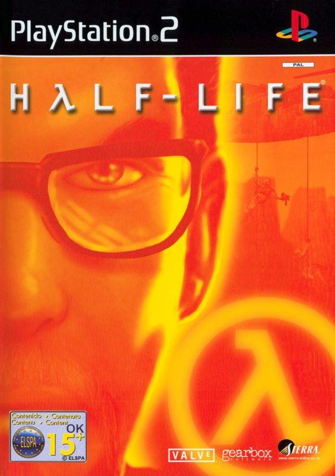
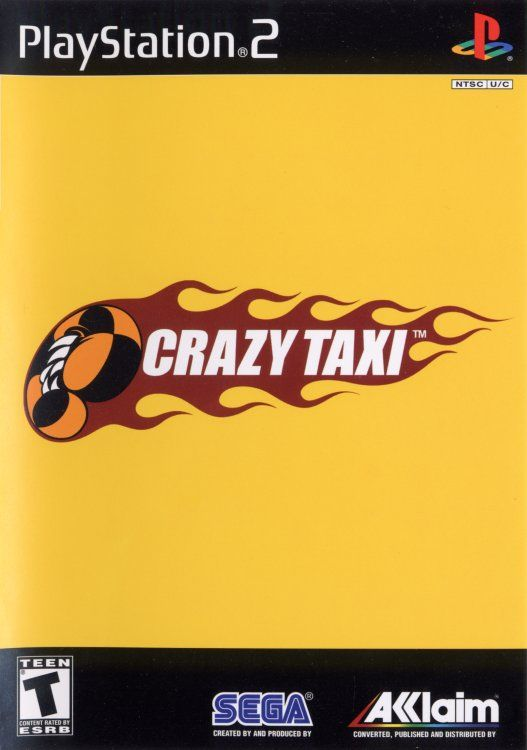
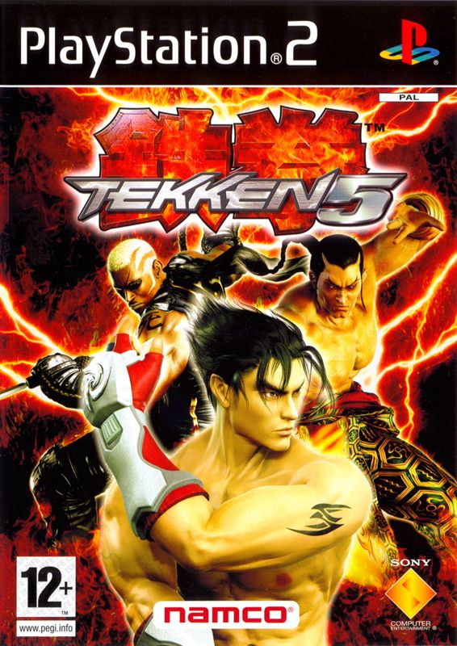

Portable PS2 Emulator Setup Guide
Copy the folders to any USB/PC and run. Everything is already pre‑configured – just point it to your games folder and connect a controller.
Folder layout
pcsx2-qtPortable/pcsx2-qt.exeps2Games/or externalD:/games/– put game ISOs here.pcsx2-qtPortable/mymc-alpha-2.7/mymc-gui.exe– tool to import saves.
Quick start (3 steps)
- Copy
pcsx2-qtPortable/to your USB drive or toD:/EMU/. -
Put your PS2 games
.iso, sometimes.bin/.cue, into:- Portable folder:
ps2Games/ - OR external folder:
D:/games/
- Portable folder:
-
Run
pcsx2-qtPortable/pcsx2-qt.exe
Add the games folder inside PCSX2
If you don't see games after starting PCSX2:
- Open Settings → Game List.
- Click Add Game Directory.
-
Choose ONE folder:
.../ps2Games/(games inside the package).D:/games/(external library).
- Click Select Folder.
Tip: In the folder picker, click This PC, choose the drive letter
(USB might be
(USB might be
E:/ or F:/), open the folder, then click Select Folder.
PS2 Games
Recommended games that work great with this portable setup.

Half-Life
Crazy Taxi
Tekken 5Controller (USB or Bluetooth)
- USB: Plug it in, then start PCSX2.
- Bluetooth: Pair it in Windows first, then start PCSX2.
- Works with PC controllers and PS4/PS5 controllers.
Saves (memory card only)
This pack does not cover save states – those are handled by your separate web save‑state app.
For normal PS2 memory card saves, use myMC to insert saves into a memory card file.
-
Run
pcsx2-qtPortable/mymc-alpha-2.7/mymc-gui.exe - Use it to import downloaded save files into your PS2 memory card image.